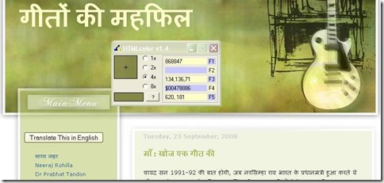
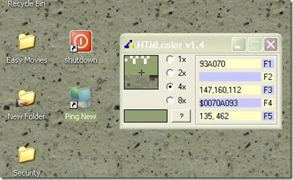

क्या कभी किसी दूसरे ब्लॉग की साज-सज्जा या किसी जाल स्थल को देखकर आपके मन में भी आता होगा कि काश मेरा चिट्ठा भी इस रंग का होता?
यानि आप अपने चिट्ठे के टेम्पलेट को बदले बिना उस का रंग बदलना चाहते हैं पर कैसे...? रंगों के एकदम सही कोड कैसे पता चलें?आईये रंगों के कोड पहचानने के लिये आपको एक बढ़िया टूल के बारे में बताते हैं। पहले इन चित्रों को देखिये-
(चित्र बड़ा देखने के लिये उस पर क्लिक करें।)


पहले चित्र में मैने अपने हिन्दी फिल्मों के दुर्लभ गीतों के ब्लॉग गीतों की महफिल के हैडर का चित्र दिया है। चित्र में हैडर के साथ एक टूल दिख रहा है और उसकी पहली पंक्ति में हैडर के रंग का कोड दिख रहा है 868847 हाँ यानि अगर आप अपने ब्लॉग का रंग बदलना चाहते हैं तो आपके लिये ब्लॉग के एच टी एम एल में जाकर संबधित कोड में पुराने रंग के कोड को नये कोड से बदल देना होता है।
दूसरे चित्र में मेरे कम्प्यूटर पर बने एक आइकॉन के नीचे Ping New को सलेक्ट करने के बाद का रंग दिख रहा है 93A070!
यह कैसे होता है यह एक टूल से होता है। यह एक बहुत छोटा सा टूल मात्र (169Kb)है जिसे आप नीचे दिये शब्द डाउनलोड पर क्लिक कर डाउनलोड कर सकते हैं। डेस्कटॉप पर जो फाइल डा.लो. हुई है उसे अनजिप कर लें। डाउनलोड करने के बाद इसे इन्स्टाल करने की जरूरत नहीं होती बस इसके आईकॉन पर क्लिक करने मात्र से यह काम करने लगता है।
जब आप इसे डाउनलोड कर इसको चालू करते हैं तो आपके माउस का पोइंटर जहाँ जहाँ जायेगा वहाँ का कोड इसमें दिखता/ बदलता रहता है। बस आपको जो रंग पसन्द आये उस रंग के कोड को पहली लाइन में से लिख लेवें या फिर एक बार ctrl (कन्ट्रोल) की दबा देवें जिससे टूल फ्रीज हो जायेगा और जब तक आप अपने एच टी एम एल को संपादित करेगे वह ऐसे ही रहेगा। आपको अगर से अगर कोई रंग का कोड जानना हो तो एक बार फिर से कन्ट्रोल की दबा दें जिससे पुराना कोड निकल जाये।
अगर आप Ctrl की नहीं दबाते हैं तो पोइंटर के इधर उधर जा ने से रंग का कोड बदलता रहेगा और आप आप को काम करने में परेशानी होगी।
टूल की पाँचवी लाइन के पास में एक प्रश्न चिन्ह बना है उस पर क्लिक करने से इस टूल की हेल्प फाइल खुलती है।
ब्लॉग में एच टी एम एल से रंगों को बदलने का तरीका फिर कभी.... :)